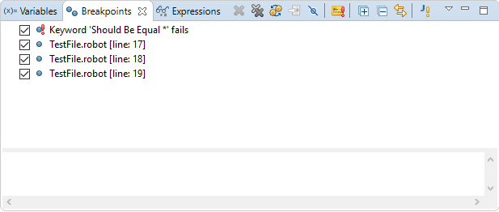

Breakpoints
Breakpoints types
There are two types of breakpoints available in RED:
- line breakpoint - this breakpoint is placed inside chosen file in some line. Execution will pause
once given line is about to be executed,
- keyword fail breakpoint - this breakpoint is defined by name of a keyword (a pattern). Execution will
pause once a keyword with a name matching to given pattern failed at some point of execution.
Breakpoints editing
List of all breakpoints is displayed in Breakpoints view of Debug perspective.
This view can be used to view and edit breakpoints even without any debugging session currently launched.

Using this view:
- each breakpoint can be enabled/disabled,
- each breakpoint can be removed,
- for each line breakpoint the attribute can be set:
- double click on line breakpoint to open the file in which selected breakpoint is placed
- keyword fail breakpoint can be added using Add Keyword Fail Breakpoint action in view toolbar
- for each keyword fail breakpoint the attributes can be set:
- Hit count: same as for line breakpoint,
- Keyword pattern: a pattern which will be checked against any failed keyword during execution.
It is possible to use ? character to mark any single character or * to mark any string.
- Note
- When breakpoint is edited the changes has to be saved. Unsaved changes in breakpoint are marked with
* mark placed in Breakpoints view title similarly as in editors. Breakpoints are stored in workspace
metadata so they are not removed when RED/eclipse is restarted.